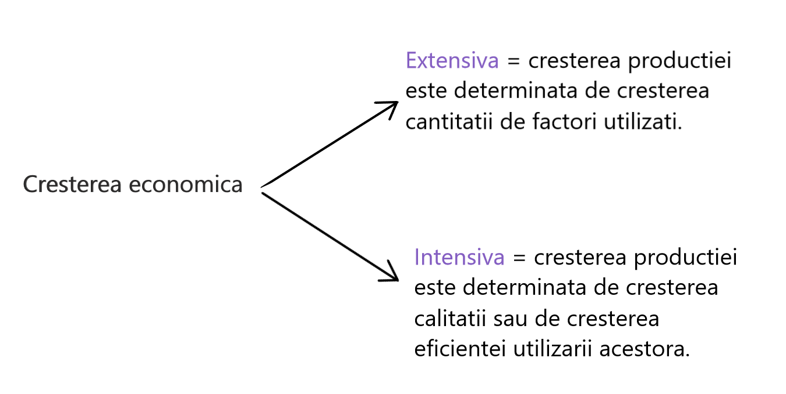
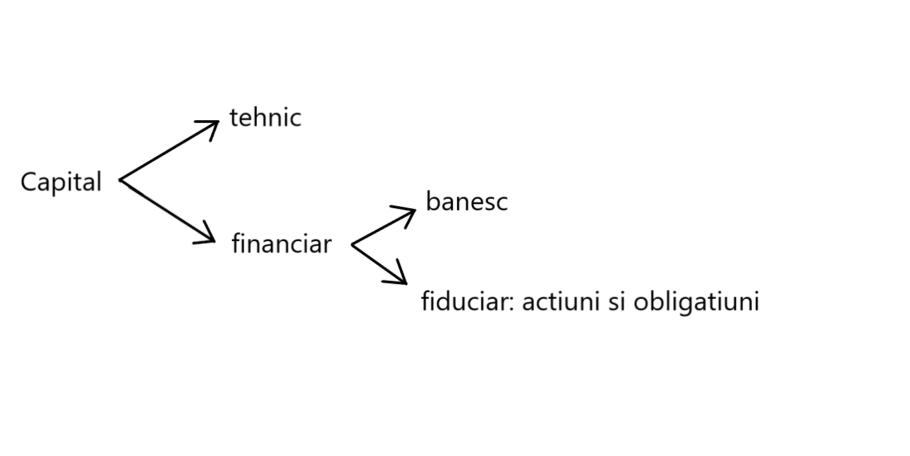

Factorii de productie sunt aceea parte a resurelor pe care agentii economici o utilizeaza si o transforma in bunuri economice noi.
In functie de modul in care contribuie la crestera rezultatelor activitatilor economice, utilizarea factorilor de productie poate fi apreciata dintr-o dubla perspectiva:

Factorii de productie
= activitatea umana constienta
- factor primar, activ, determinat
= asamblul elementelor provenite din mediul ambientul ce sunt transformate, prelucrate in bunuri economice noi.
- factor primar
Cel mai important factor natural este Pamantul datorita bogatiilor solului, subsolului si resurse de apa.
= bunuri sau mijloace de productie

Capitalul tehnic
In functie de modul in care se utilizeaza, se consuma si se inlocuieste:
FIX(Kf): acea parte a capitalului care se utilizeaza pe parcursul mai multor procese de productie, se consuma treptat, transformandu-si valoarea asupra noilor produse si se inlocuieste dupa o perioada mai indelungata de utilizare.
CIRCULANT(Kc): acea parte a capitalului tehnic ce se utilizeaza intr-un singur ciclu/proces de productie, se consuma integral sa se transforma in noul produs si se inlocuieste la inceputul fiecarui proces de productie.
Kc = Kcconsumat = Kc
= factori noi determinati de progresul tehnic. (ex: informatia, licente, prototipuri, cunostinte de management si marketing)
Substitutia factorilor de productie = inlocuirea unuia sau mai multor factori de productie cu un factor nou sau deja utlizat in scopul obtinerii unor rezultate mai bune.
Productivitatea marginala(Wmg): sporul de productie determinat de sporirea volumului utilizat dintr-un anumit factor de productie cu o unitate.
Wmg =
ΔQ/ΔFp
WmgL =
ΔQ/ΔL
WmgP =
ΔQ/ΔP
WmgK =
ΔQ /ΔK
Rata marginala de substitutie(RmgS): arata cu cat trebuie sa creasca volumul utilizat dintr-un anumit factor productie (Δx) pentru a compensa reducerea cu 0 unitate a volumul utilizat dintr-un alt factor de productie (Δy).